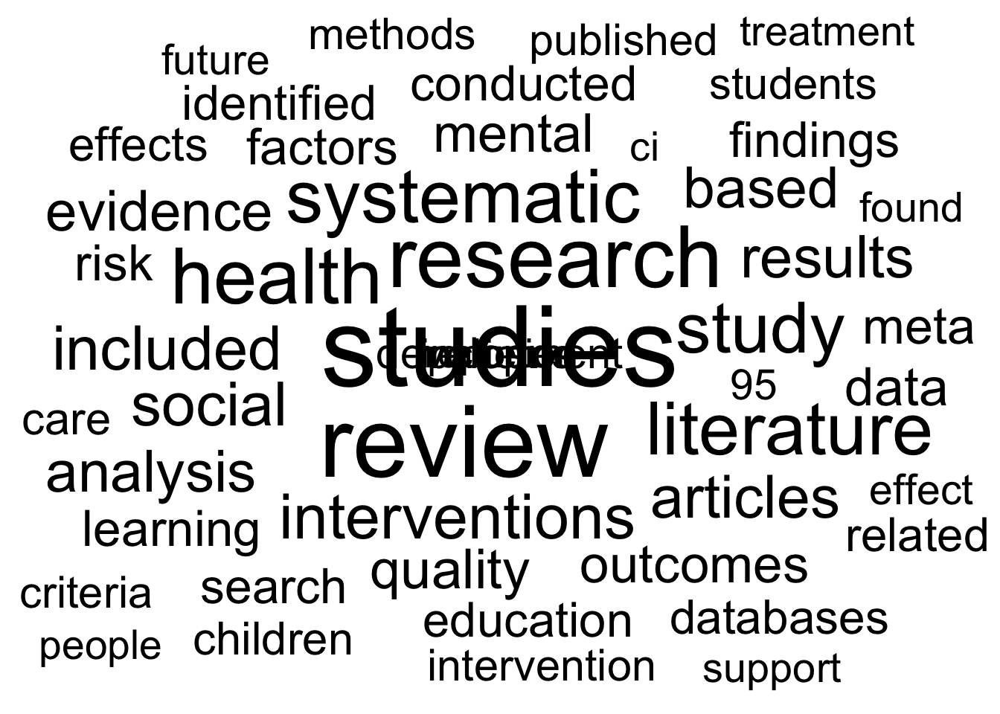

if (!require("pacman")) install.packages("pacman")
pacman::p_load(
here, qs, # file management
magrittr, janitor, # data wrangling
easystats, sjmisc, # data analysis
gt, gtExtras, # table visualization
ggpubr, ggwordcloud, # visualization
tidytext, widyr, # text analysis
openalexR,
tidyverse # load last to avoid masking issues
)Text processing in R
Session 08 - Showcase
 Link to slides
Link to slides
Preparation
Codechunks aus der Sitzung
Erstelle Subsample
review_subsample <- review_works_correct %>%
# Eingrenzung: Sprache und Typ
filter(language == "en") %>%
filter(type == "article") %>%
# Datentranformation
unnest(topics, names_sep = "_") %>%
filter(topics_name == "field") %>%
filter(topics_i == "1") %>%
# Eingrenzung: Forschungsfeldes
filter(
topics_display_name == "Social Sciences"|
topics_display_name == "Psychology"
)Subsample im Zeitverlauf
review_works_correct %>%
mutate(
included = ifelse(id %in% review_subsample$id, "Ja", "Nein"),
included = factor(included, levels = c("Nein", "Ja"))
) %>%
ggplot(aes(x = publication_year_fct, fill = included)) +
geom_bar() +
labs(
x = "",
y = "Anzahl der Einträge",
fill = "In Subsample enthalten?"
) +
scale_fill_manual(values = c("#A0ACBD50", "#FF707F")) +
theme_pubr() Tokenization der Abstracts
# Create tidy data
review_tidy <- review_subsample %>%
# Tokenization
tidytext::unnest_tokens("text", ab) %>%
# Remove stopwords
filter(!text %in% tidytext::stop_words$word)
# Preview
review_tidy %>%
select(id, text) %>%
print(n = 10)# A tibble: 4,880,965 × 2
id text
<chr> <chr>
1 https://openalex.org/W4293003987 5
2 https://openalex.org/W4293003987 item
3 https://openalex.org/W4293003987 world
4 https://openalex.org/W4293003987 health
5 https://openalex.org/W4293003987 organization
6 https://openalex.org/W4293003987 index
7 https://openalex.org/W4293003987 5
8 https://openalex.org/W4293003987 widely
9 https://openalex.org/W4293003987 questionnaires
10 https://openalex.org/W4293003987 assessing
# ℹ 4,880,955 more rowsVergleich eines Abstraktes in Rohform und nach Tokenisierung
review_subsample$ab[[1]][1] "The 5-item World Health Organization Well-Being Index (WHO-5) is among the most widely used questionnaires assessing subjective psychological well-being. Since its first publication in 1998, the WHO-5 has been translated into more than 30 languages and has been used in research studies all over the world. We now provide a systematic review of the literature on the WHO-5.We conducted a systematic search for literature on the WHO-5 in PubMed and PsycINFO in accordance with the PRISMA guidelines. In our review of the identified articles, we focused particularly on the following aspects: (1) the clinimetric validity of the WHO-5; (2) the responsiveness/sensitivity of the WHO-5 in controlled clinical trials; (3) the potential of the WHO-5 as a screening tool for depression, and (4) the applicability of the WHO-5 across study fields.A total of 213 articles met the predefined criteria for inclusion in the review. The review demonstrated that the WHO-5 has high clinimetric validity, can be used as an outcome measure balancing the wanted and unwanted effects of treatments, is a sensitive and specific screening tool for depression and its applicability across study fields is very high.The WHO-5 is a short questionnaire consisting of 5 simple and non-invasive questions, which tap into the subjective well-being of the respondents. The scale has adequate validity both as a screening tool for depression and as an outcome measure in clinical trials and has been applied successfully across a wide range of study fields."review_tidy %>%
filter(id == "https://openalex.org/W4293003987") %>%
pull(text) %>%
paste(collapse = " ")[1] "5 item world health organization index 5 widely questionnaires assessing subjective psychological publication 1998 5 translated 30 languages research studies world provide systematic review literature 5 conducted systematic search literature 5 pubmed psycinfo accordance prisma guidelines review identified articles focused aspects 1 clinimetric validity 5 2 responsiveness sensitivity 5 controlled clinical trials 3 potential 5 screening tool depression 4 applicability 5 study fields.a total 213 articles met predefined criteria inclusion review review demonstrated 5 clinimetric validity outcome measure balancing unwanted effects treatments sensitive specific screening tool depression applicability study fields high.the 5 short questionnaire consisting 5 simple invasive questions tap subjective respondents scale adequate validity screening tool depression outcome measure clinical trials applied successfully wide range study fields"Count token frequency
# Create summarized data
review_summarized <- review_tidy %>%
count(text, sort = TRUE)
# Preview Top 15 token
review_summarized %>%
print(n = 15)# A tibble: 122,148 × 2
text n
<chr> <int>
1 studies 73398
2 review 57878
3 research 42689
4 health 35108
5 systematic 32431
6 literature 31374
7 study 29012
8 interventions 22731
9 included 21987
10 social 21528
11 articles 20631
12 results 20166
13 analysis 19624
14 based 18929
15 evidence 18545
# ℹ 122,133 more rowsThe (Unavoidable) Word Cloud
review_summarized %>%
top_n(50) %>%
ggplot(aes(label = text, size = n)) +
ggwordcloud::geom_text_wordcloud() +
scale_size_area(max_size = 20) +
theme_minimal()
Wortkombinationen (n-grams)
# Create word paris
review_word_pairs <- review_tidy %>%
widyr::pairwise_count(
text,
id,
sort = TRUE)
# Preview
review_word_pairs %>%
print(n = 14)# A tibble: 114,446,724 × 3
item1 item2 n
<chr> <chr> <dbl>
1 review studies 20494
2 studies review 20494
3 review systematic 20266
4 systematic review 20266
5 review research 16902
6 research review 16902
7 literature review 16754
8 review literature 16754
9 systematic studies 16097
10 studies systematic 16097
11 study review 13391
12 review study 13391
13 studies research 13173
14 research studies 13173
# ℹ 114,446,710 more rowsWortkorrelationen
# Create word correlation
review_pairs_corr <- review_tidy %>%
group_by(text) %>%
filter(n() >= 300) %>%
pairwise_cor(
text,
id,
sort = TRUE)
# Preview
review_pairs_corr %>%
print(n = 15)# A tibble: 5,529,552 × 3
item1 item2 correlation
<chr> <chr> <dbl>
1 ottawa newcastle 0.977
2 newcastle ottawa 0.977
3 briggs joanna 0.967
4 joanna briggs 0.967
5 scholar google 0.938
6 google scholar 0.938
7 obsessive compulsive 0.929
8 compulsive obsessive 0.929
9 nervosa anorexia 0.893
10 anorexia nervosa 0.893
11 ci 95 0.887
12 95 ci 0.887
13 las los 0.886
14 los las 0.886
15 gay bisexual 0.861
# ℹ 5,529,537 more rowsSpezifische “Partner” in spezifischen Umgebungen
review_pairs_corr %>% #|
filter(
item1 %in% c(
"review",
"literature",
"systematic")
) %>%
group_by(item1) %>%
slice_max(correlation, n = 5) %>%
ungroup() %>%
mutate(
item2 = reorder(item2, correlation)
) %>%
ggplot(
aes(item2, correlation, fill = item1)
) +
geom_bar(stat = "identity") +
facet_wrap(~ item1, scales = "free_y") +
coord_flip() +
scale_fill_manual(
values = c(
"#04316A",
"#C50F3C",
"#00B2D1")) +
theme_pubr()
Die häufigsten “positiven” und “negativen” Wörter in den Abstracts
review_sentiment_count <- review_tidy %>%
inner_join(
get_sentiments("bing"),
by = c("text" = "word"),
relationship = "many-to-many") %>%
count(text, sentiment)
# Preview
review_sentiment_count %>%
group_by(sentiment) %>%
slice_max(n, n = 10) %>%
ungroup() %>%
mutate(text = reorder(text, n)) %>%
ggplot(aes(n, text, fill = sentiment)) +
geom_col(show.legend = FALSE) +
facet_wrap(
~sentiment, scales = "free_y") +
labs(x = "Contribution to sentiment",
y = NULL) +
scale_fill_manual(
values = c("#C50F3C", "#007900")) +
theme_pubr()Verknüpfung des Sentiemnt (“Scores”) mit den Abstracts
review_sentiment <- review_tidy %>%
inner_join(
get_sentiments("bing"),
by = c("text" = "word"),
relationship = "many-to-many") %>%
count(id, sentiment) %>%
pivot_wider(names_from = sentiment, values_from = n, values_fill = 0) %>%
mutate(sentiment = positive - negative)
# Check
review_sentiment # A tibble: 35,710 × 4
id negative positive sentiment
<chr> <int> <int> <int>
1 https://openalex.org/W1000529773 2 2 0
2 https://openalex.org/W1006561082 0 1 1
3 https://openalex.org/W100685805 4 15 11
4 https://openalex.org/W1007410967 0 7 7
5 https://openalex.org/W1008209175 8 1 -7
6 https://openalex.org/W1009104829 2 4 2
7 https://openalex.org/W1009607471 15 8 -7
8 https://openalex.org/W1031503832 13 6 -7
9 https://openalex.org/W1035654938 10 5 -5
10 https://openalex.org/W1044055445 5 0 -5
# ℹ 35,700 more rowsVerteilung des Sentiment (Scores) in den Abstracts
[1] 0.4858737review_sentiment %>%
ggplot(aes(sentiment)) +
geom_histogram(binwidth = 0.5, fill = "#FF707F") +
labs(
x = "Sentiment (Score) des Abstracts",
y = "Anzahl der Einträge"
) +
theme_pubr() +
theme(axis.text.x = element_text(angle = 90, vjust = 0.5, hjust=1))Entwicklung des Sentiment (Scores) der Abstracts im Zeitverlauf
# Create first graph
g1 <- review_works_correct %>%
filter(id %in% review_sentiment$id) %>%
left_join(review_sentiment, by = join_by(id)) %>%
sjmisc::rec(
sentiment,
rec = "min:-2=negative; -1:1=neutral; 2:max=positive") %>%
ggplot(aes(x = publication_year_fct, fill = as.factor(sentiment_r))) +
geom_bar() +
labs(
x = "",
y = "Anzahl der Einträge",
fill = "Sentiment (Score)") +
scale_fill_manual(values = c("#C50F3C", "#90A0AF", "#007900")) +
theme_pubr()
#theme(axis.text.x = element_text(angle = 90, vjust = 0.5, hjust=1))
# Create second graph
g2 <- review_works_correct %>%
filter(id %in% review_sentiment$id) %>%
left_join(review_sentiment, by = join_by(id)) %>%
sjmisc::rec(
sentiment,
rec = "min:-2=negative; -1:1=neutral; 2:max=positive") %>%
ggplot(aes(x = publication_year_fct, fill = as.factor(sentiment_r))) +
geom_bar(position = "fill") +
labs(
x = "",
y = "Anteil der Einträge",
fill = "Sentiment (Score)") +
scale_fill_manual(values = c("#C50F3C", "#90A0AF", "#007D29")) +
theme_pubr()
# COMBINE GRPAHS
ggarrange(g1, g2,
nrow = 1, ncol = 2,
align = "hv",
common.legend = TRUE)